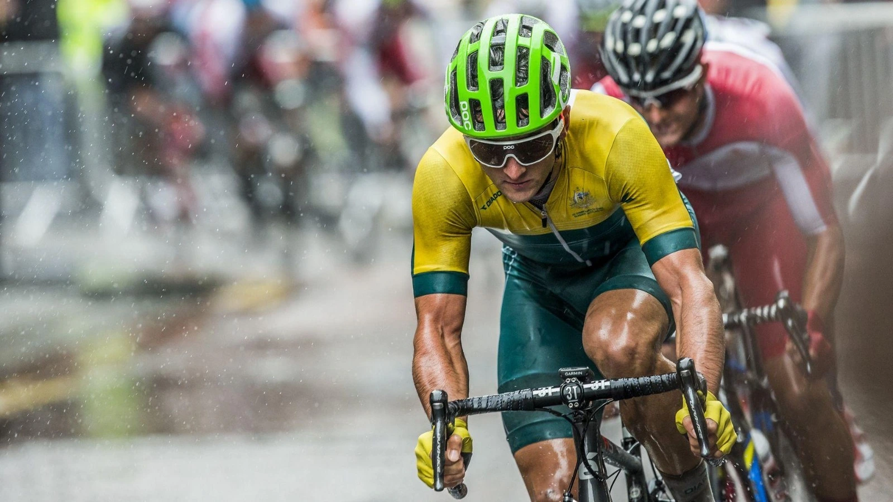

About Bike Races Series

Mission
To quote https://24hoursoflemons.com/:
"Mountain biking shouldn't just be for some freaks. Mountain biking should be for all freaks"
Vision
The Bike Pedals and Mountains org aspires to organize trials and routes in all the mountains in Europe, available to amateur bikers that love travel and adventure.
General Information
Bikes, Pedals and Mountains is an organization that promotes trials and routes for amateur bikers in different mountain aroun Europe. We want to organize two big events per year and organize many smaller events every months in differents parts of Europe. We have a network of associated bike clubs and we are growging our network.